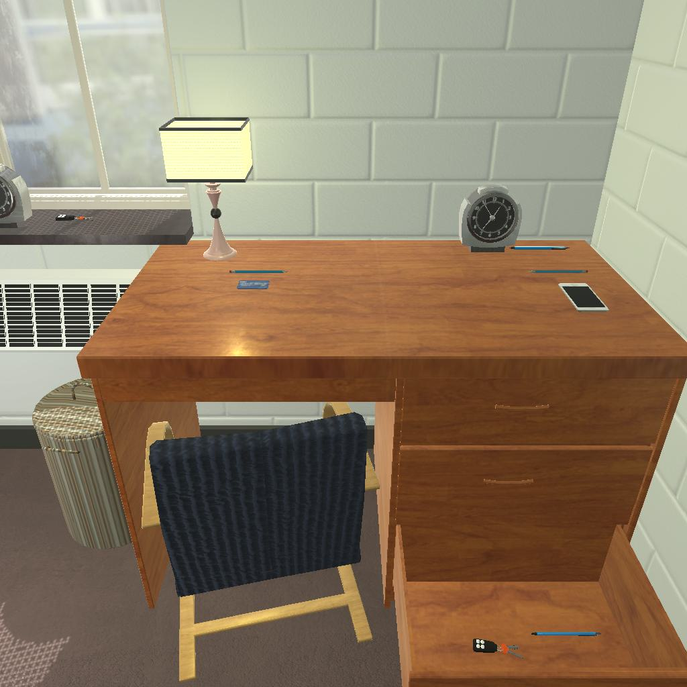

---------------------------------------------------------task: 8---------------------------------------------------------
--------------------------------------------------------------------------------------------------------------------------------------------------------------------
--------------------------------------------------------------------------------------------------------------------------------------------------------------------
Step:--------------------------------------------------------------------------11-------------------------------------------------------------------------------
----------------------------------------
VLM Prompt:
Image1:
**Instruction**
1. Analyze the provided image to identify all visible household objects, focusing on those relevant to the task description "put a laptop in desk."
2. Use the analysis of the image and the task hint "The agent must find an object of the desired type, pick it up, find the correct location to place it, and put it down there." to answer the question: what is the most reasonable action in the choices for the task description "put a laptop in desk"?
4. Decide and write the answer using the template: The answer is: (i): , where i is the real number. If there is no desired object in the image, search every place based on **Initial Observation** to find the object. And if no one is exactly correct, choose a similar answer.
**Initial Observation**
You are in the middle of a room. Looking quickly around you, you can see bed (1), garbagecan (1), desk (1), sidetable (1), drawer (1-5), laundryhamper (1)
**Answer Choices**
(1): go to bed 1
(2): go to garbagecan 1
(3): go to desk 1
(4): go to sidetable 1
(5): go to drawer 1
(6): go to drawer 2
(7): go to laundryhamper 1
(8): go to drawer 4
(9): go to drawer 5
(10): close drawer 3
(11): take alarmclock 1 from drawer 3
(12): take laundryhamperlid 1 from drawer 3
(13): take alarmclock 2 from drawer 3
(14): take cellphone 1 from drawer 3
(15): take keychain 2 from drawer 3
(16): take creditcard 1 from drawer 3
(17): take pen 3 from drawer 3
(18): take pen 1 from drawer 3
(19): take pencil 1 from drawer 3
(20): take pencil 2 from drawer 3
(21): take keychain 1 from drawer 3
(22): use desklamp 1
**Answer**
Let's think step by step by following the instructions.
----------------------------------------
----------------------------------------
Original Response:
The task is to "put a laptop in desk," so we need to find a laptop. Looking at the provided image, there is no laptop visible on the desk or in the immediate surroundings. According to the Initial Observation, we are in a room with several items, including a desk and multiple drawers.
The most reasonable action to find a laptop would be to search the drawers, as laptops are often stored in drawers when not in use. Among the answer choices, going to a drawer seems to be the most related action to search for a laptop.
Therefore, the answer is: (5): go to drawer 1. If the laptop is not found there, the next reasonable actions would be to continue searching the other drawers.
The answer is: (5): go to drawer 1.
----------------------------------------
----------------------------------------
>>> Refine Original VLM Response and Get Pure Action: go to drawer 1
----------------------------------------
-----------------------------------------------------------------
Running time: 10.24479866027832 seconds
Total Money: 2.1381400000000004
-----------------------------------------------------------------
-----------------------------------------------------------------
Text Observation:You arrive at loc 4. The drawer 1 is open. On the drawer 1, you see a book 1, a cd 1, and a pen 2.
-----------------------------------------------------------------
UNSUCCEED